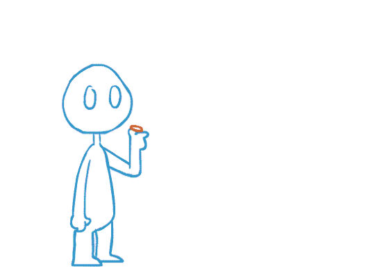

What is the probability of rolling a prime (event 1)?
What is the probability rolling an odd number (event 2)?
What is the probability of a prime given that the roll is an odd number?
What is the probabilty of a prime or an odd number?
Conditional Probability : \(\displaystyle P(E|F) = \frac{n(E \cap F)/n(S)}{n(F)/n(S)} = \frac{P(E \cap F)}{P(F)}\) if \(P(F) \neq 0\)
Why do we add the extra statement 'if \(P(F) \neq 0\)?'
Example - Rain and Accidents
Records for Menomonie over the past several years give the following relative frequencies for being in an accident on Memorial Day:
Accident A
No Accident A'
Rain R
0.025
0.335
No Rain R'
0.015
0.625
What is the probabilty of an accident?
What is the probability of rain on Memorial Day?
What is the probability of an accident given rain?
What is the probability of an accident given no rain?
How much more likely is it to have an accident on Memorial Day if there is rain?
Example - Store Customers
60% of a store's customers are female and 75% of female customers have a charge account.
What is the probability that a random customer is a female with a charge account?
If 80% of males have a charge account, what is the probability that a random customer has a charge account?
Example - Three event result
Explain the formula \(\displaystyle P( A \cap B \cap C) = P(A) P(B|A) P(C| A \cap B)\).
Example - More blackjack
Consider playing blackack with a single 52 card deck. Blackjack is an ace and a card worth 10 (10,J,Q,K).
What is the probability of blackjack if the first card dealt is an ace?
What is the probability of blackjack if the first card dealt is a card worth 10?
How is this related to the previous unordered approach we looked at?
Example - Computer Company
A large computer company, A, subcontracts the making of circuit boards to companies B and C, 40% and 60% repsectively.
Company B then subcontracts 70% of its orders to company D and 30% to company E. All ship the boards back to A to use in different things.
Quality Control at A has found that 0.5%, 1.5% and 1% of the boards made by C,D,E are defective, respectively.
What is the probability that a random computer sold by A is defective?
Draw a tree diagram to illustrate this example.
Example - balls in a box
Consider a box with 3 blue and 2 white balls. We pick out 2 balls one at a time.
What is the probabilty the second ball is white if we consider the case where we replace the first ball versus
the case without replacement?
Draw a tree diagram that illustrates the case with replacement and write down the probability of the second ball being white.
Draw a tree diagram that illustrates the case without replacing the first ball and write down the probability of the second ball being white.
Which case represents the balls being drawn as independent events? Why?
Definition If \(A\) and \(B\) are events in sample space \(S\) we say they are independent if and only if \(P(A\cap B) = P(A)P(B)\).
Otherwise they are dependent.
Use this equation to verify the independence for your chosen case above.
Example - Coin Flips

Consider flipping a coin twice. Show the flips are independent events. Draw a tree diagram that represents the situation.
Example - National Lung Society
The National Lung Society surveyed 2000 women.
680 were smokers.
50 has emphysema.
42 were smokers who had emphysema.
Do these results suggest smoking and emphysema are independent events?
Example - Battery
The probabilty a battery will last 10 hours is 0.8. The probability that it will last 15 hours is 0.15.
Given that a battery has lasted 10 hours what is the probability it will last 15 hours?
Example - University students and financial aid
Consider the following data from a university about its students and whether they receive financial aid.
Receives financial aid
No financial aid
total
Undergrad
4222
3898
8120
Grad student
1879
731
2610
total
6101
4629
Let \(A = \) student is an undergrad.
Let \(B = \) student receives financial aid.
Calculate the quanitities below and use words to describe what they represent.
\(P(A)\)
\(P(B)\)
\(P(A \cap B ) \)
\(P(B \mid A) \)
\(P(B \mid A^c) \)
Are \(A\) and \(B\) independent events?
Example - Landscaping company
Consider owning a landscaping company and bidding on 3 projects. You estimate the chances of winning the bid
on projects A, B, and C to be 0.7, 0.6, and 0.5, respectively. You also know the chances of winning each are independent.
Draw a tree diagram to help you determine the probability that you win:
all three bids?
exactly two bids?
exactly one bid?
no bids?
Example - Cards
A single card is drawn from a standard deck of 52.
Let \(S \equiv \) the card is a spade.
Let \(F \equiv \) the card is a face card.
Let \(C \equiv \) the card is a club.
Which pairs of events are independent?
Remark: do not confuse independent events with mutually exclusive events.
Example - dice (again)
A single six-sided die is rolled 6 times. What is the probability of the sequence of rolls being 1,2,3,4,5,6 ?